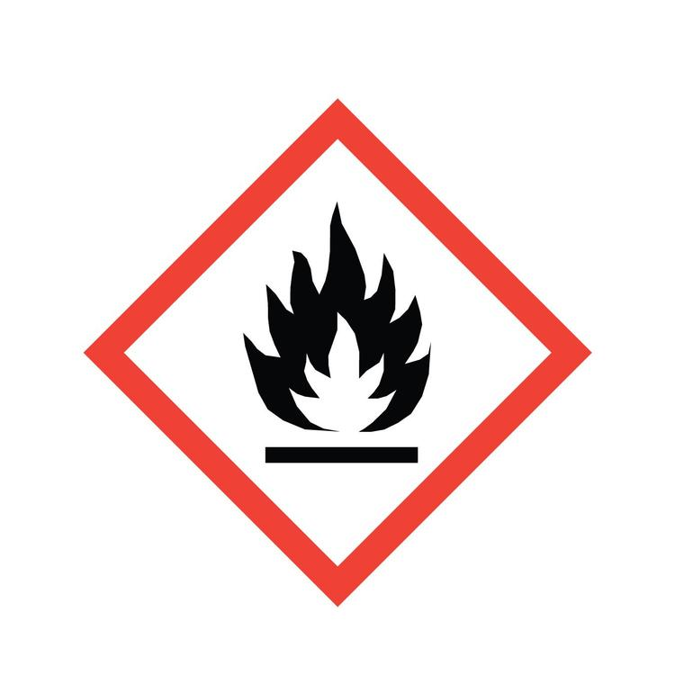
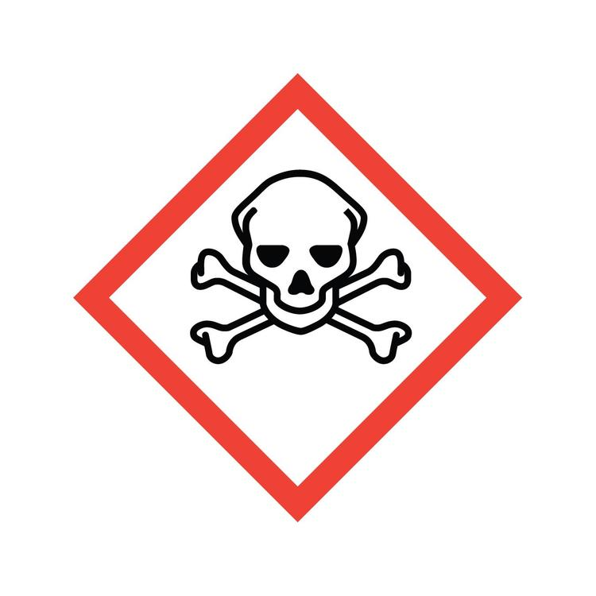
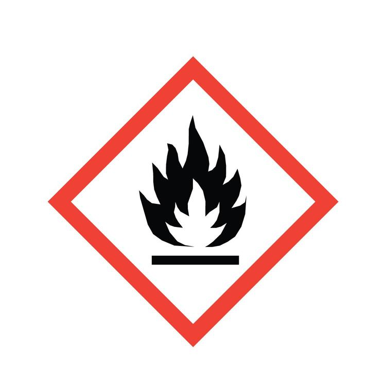
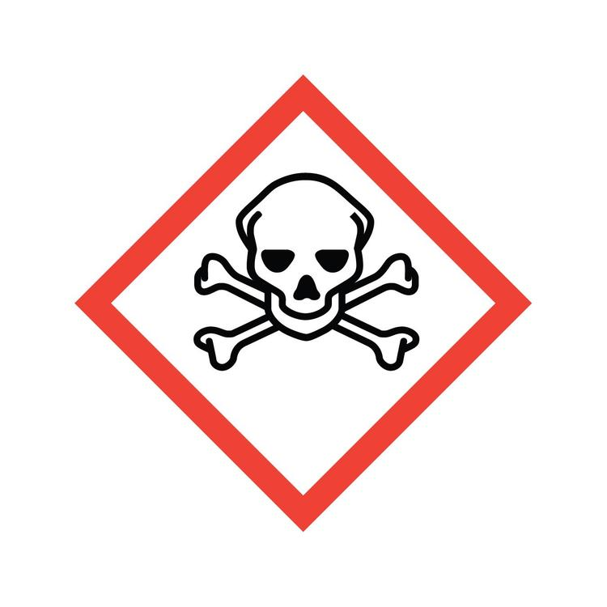
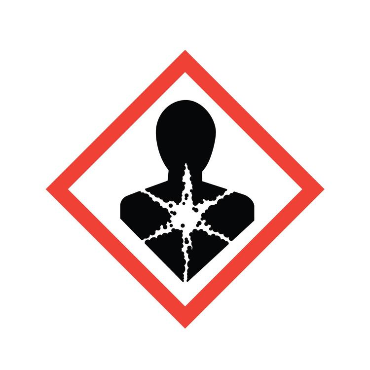
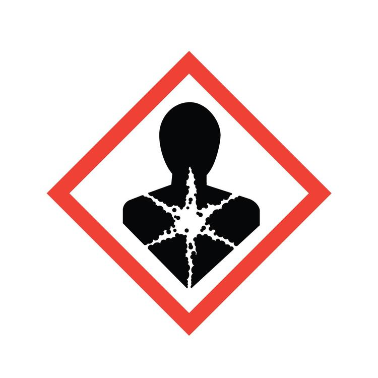
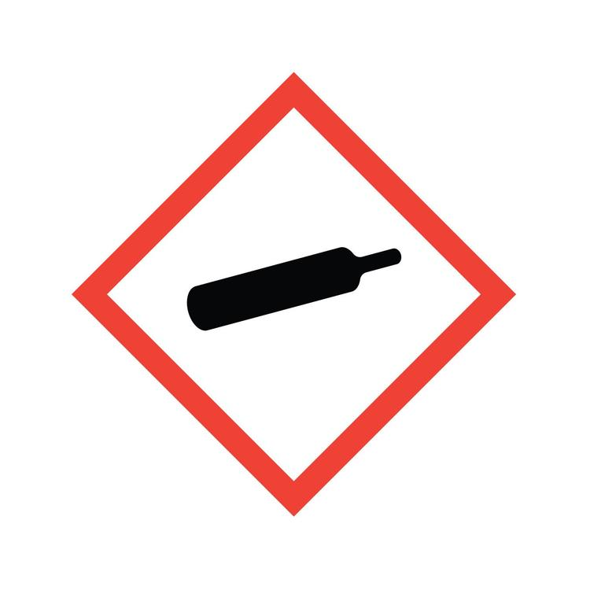
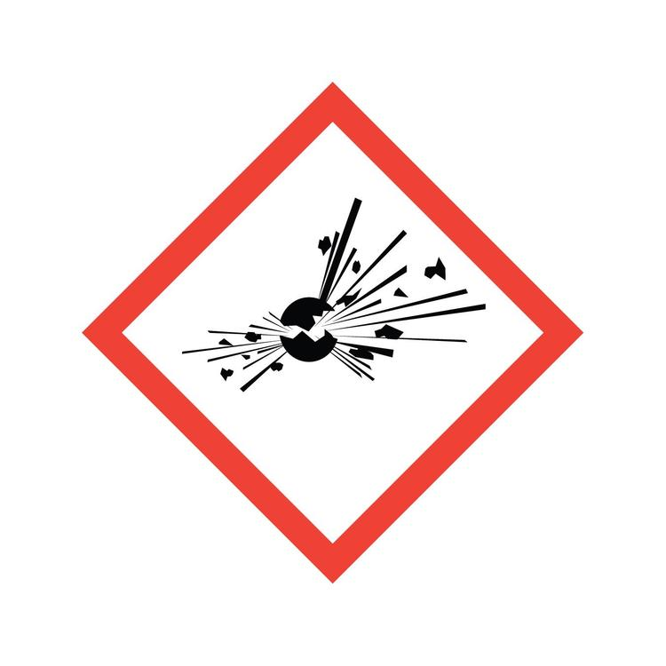
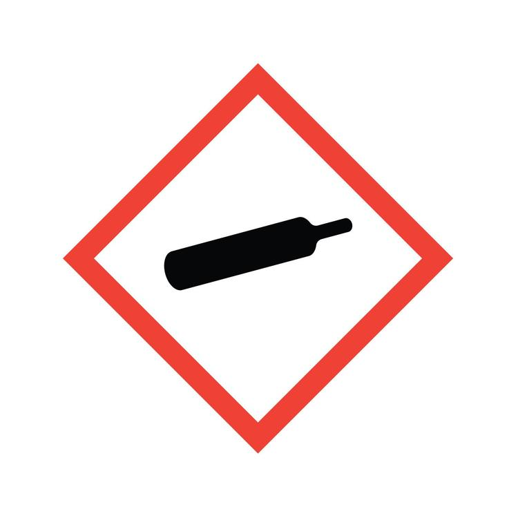
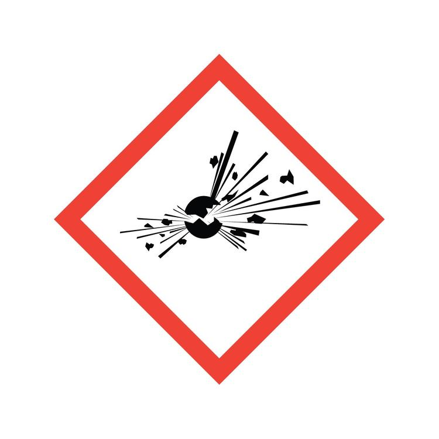

 

 



Safety Data Sheet (SDS) is an important tool in identifying the potential harms that certain substances may cause. In most cases, SDS is required to be provided by the manufacturer, importer, or distributor of the substance. It is important to understand the symbols and the emergency response to take when exposed to these substances. Below are the symbols and the appropriate emergency response to take when exposed to these substances.
For more information on SDS, click here.Corrosive substances are capable of causing burns, skin irritation, and severe eye damage. If exposed, rinse the affected area with water for 15 minutes and seek medical attention. Examples of corrosive substances are acids and bases. It's symbol is a picture of a hand being burned by a chemical.
Flammable substances are capable of catching fire and causing burns. If exposed, remove any clothing that has been contaminated and rinse the affected area with water for 15 minutes. Seek medical attention. Examples of flammable substances are gasoline and alcohol. It's symbol is a picture of a flame.
Toxic substances are capable of causing death or serious injury if inhaled, swallowed, or absorbed through the skin. If exposed, seek medical attention immediately. Examples of toxic substances are pesticides and mercury. It's symbol is a picture of a skull and crossbones.
Irritant substances are capable of causing skin and eye irritation. If exposed, rinse the affected area with water for 15 minutes and seek medical attention. Examples of irritant substances are bleach and ammonia. It's symbol is a picture of an exclamation mark.
Oxidizer substances are capable of causing or intensifying a fire. If exposed, remove any clothing that has been contaminated and rinse the affected area with water for 15 minutes. Seek medical attention. Examples of oxidizer substances are hydrogen peroxide and potassium permanganate. It's symbol is a picture of a flame over a circle.
Health Hazard substances are capable of causing cancer, respiratory, and reproductive toxicity. If exposed, seek medical attention immediately. Examples of health hazard substances are asbestos and lead. It's symbol is a picture of a person with a star on their chest.
Environmental Hazard substances are capable of causing damage to the environment. If exposed, seek medical attention immediately. Examples of environmental hazard substances are oil and mercury. These chemicals should be disposed of properly as per the guidelines of the Environmental Protection Agency (EPA). It's symbol is a picture of a deceased tree and fish.
Pressurized Gas substances are capable of causing explosions. If exposed, seek medical attention immediately. Examples of pressurized gas substances are propane and butane. It's symbol is a picture of a gas cylinder.
Explosive substances are capable of causing explosions. If exposed, seek medical attention immediately. Examples of explosive substances are TNT and nitroglycerin.
“Safety Data Sheets (SDS).” OSHA, United States Department of Labor, www.osha.gov/Publications/OSHA3514.html.
“Safety Data Sheets.” Environmental Health and Safety, University of California, Davis, ehs.ucdavis.edu/units/labsafety/chemical-safety/safety-data-sheets.